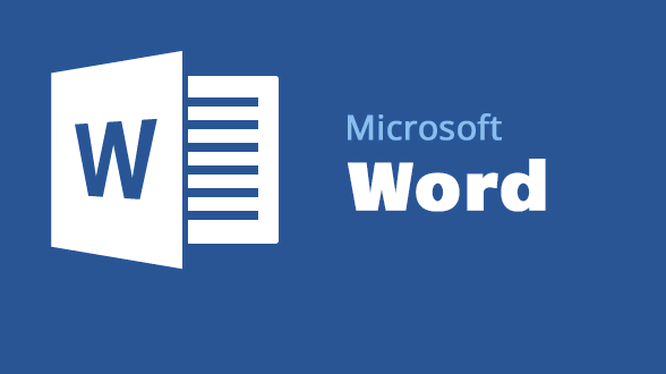
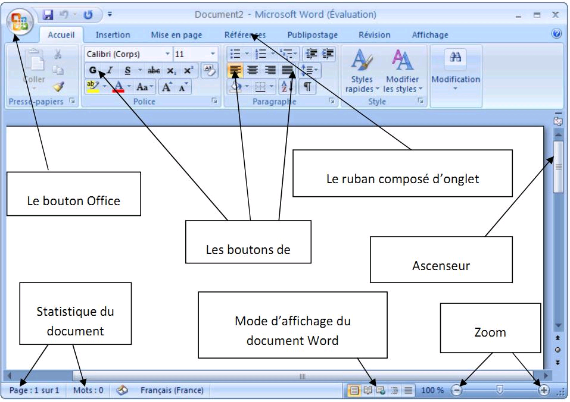

Microsoft WORD
C'est un logiciel de traitement de texte publié par Microsoft. La version la plus récente est WORD 2021. Sa première version a été distribuée en 1983 sous le nom de MULTI-TOOL WORD pour le système d'exploitation Xenix qui était une version du système Unix à la fin des années 1970.

Appartenant à la suite bureautique de Microsoft , Word permet de rédiger et mettre en forme des documents textes.
Il permet également de mettre en page vos documents , de générer des sommaires , de numéroter automatiquement des pages , corriger la grammaire et l'orthographe , de créer des schémas , de faire du publipostage.
WORD est plutôt bien conçu et facile à prendre en main, il vous permettra de rédiger les lettres et courriers , ou encore de mettre en forme vôtre CV. Vous pourrez ensuite choisir un jeu de typographies et couleurs pour personnaliser votre document.
Voilà un peu comment se présente le WORD :
